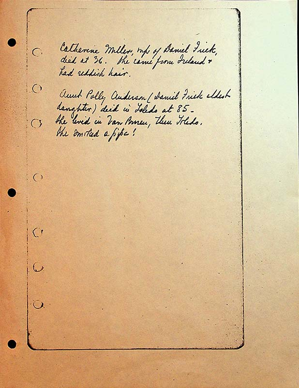

Catherine Miller, wife of Daniel Frick, died at 36. She came from Ireland & had red hair.
Aunt Polly Anderson (Daniel Frick oldest daughter) died in Toledo at 85. She lived in Van Buren then Toledo.
She smoked a pipe!